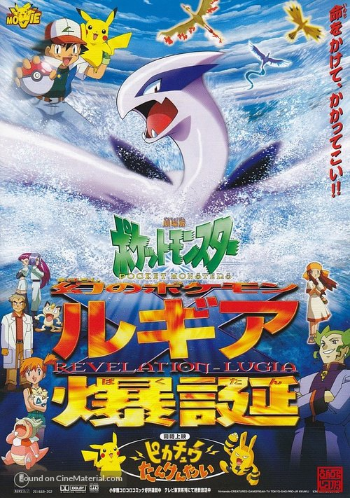
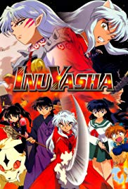
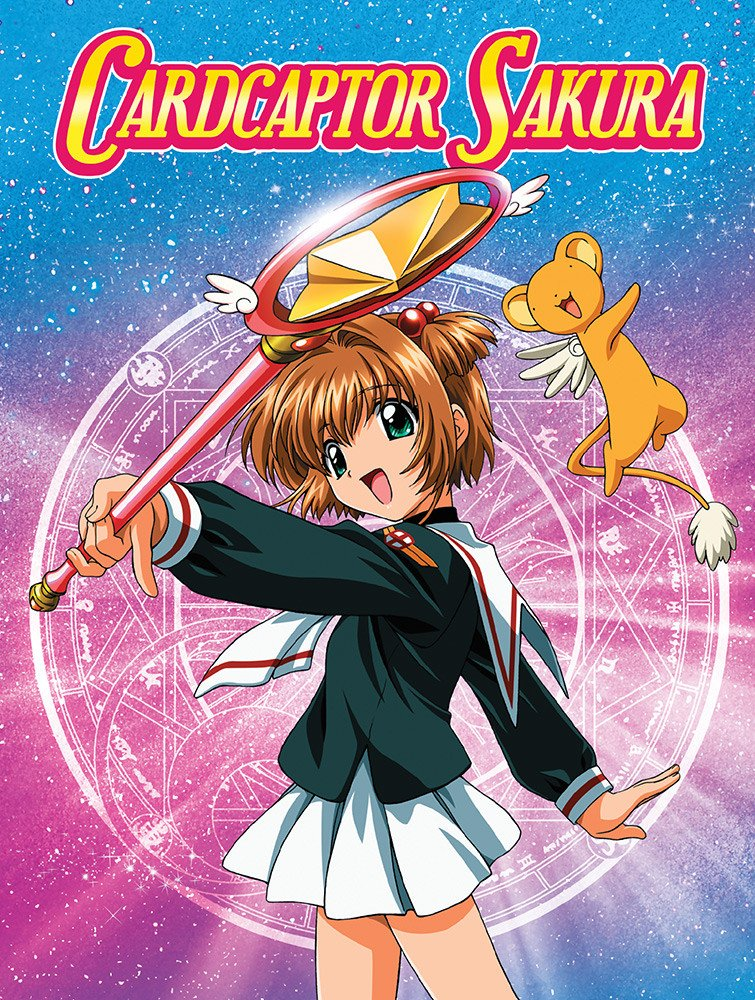
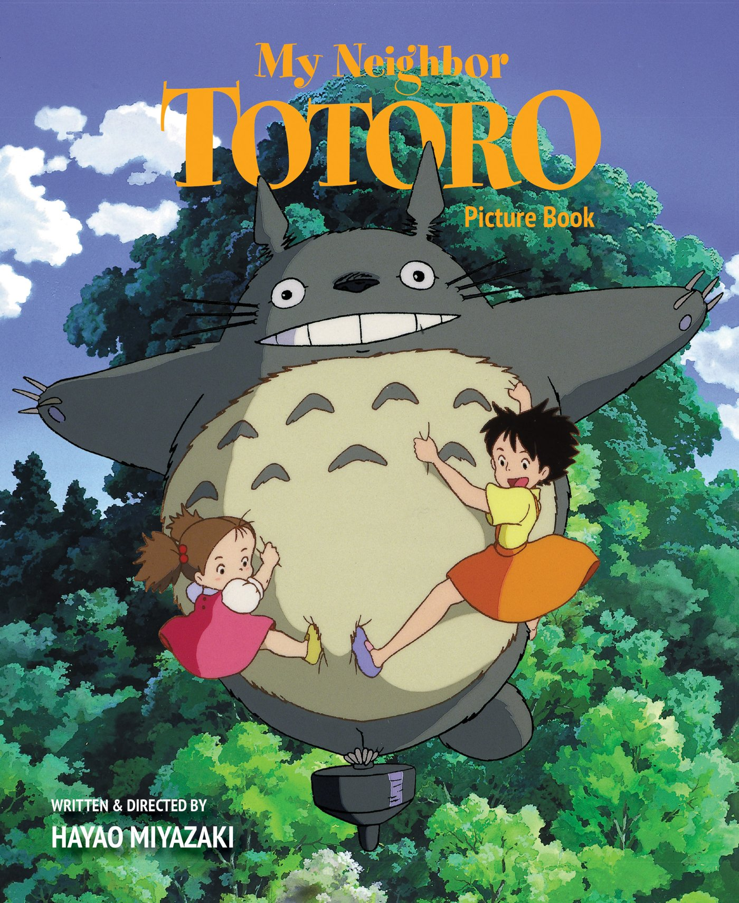

It all started when I watched Pokemon on T.V. and before I knew it I found myself searching for more anime on the internet to watch.*Disclaimer* not every anime I've watched is listed.

Pokemon
Sailor Moon
Yu Yu Hakusho
Mermaid Melody

Inuyasha

Cardcaptor

My Neighbor Totoro
Mew Mew Power
Shugo Chara
Second Discovery
As I continue to watch anime I began to get into the OST and theme songs. While I browse the internet for the anime theme songs, I came across the Japanese version of Genie by Girl Generagation. This led to my new entertainment discovery which is Kpop.